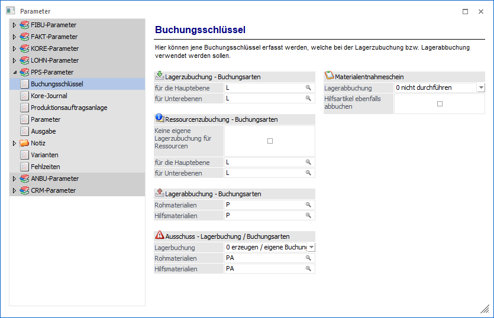
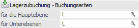
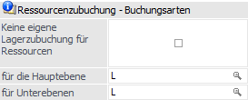
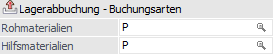
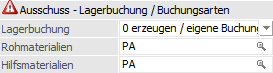
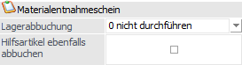

Über den Bereich "PPS-Parameter - Buchungsschlüssel" können allgemeine Einstellungen bezüglich der Lagerbuchungen vorgenommen werden.
Hinweis
Standardmäßig wird das Fenster in einem "Lesemodus" geöffnet, d.h. es können die bestehenden Einstellungen kontrolliert, Änderungen allerdings nicht durchgeführt werden. Hierfür muss zunächst mit Hilfe des Buttons "Bearbeiten" der "Bearbeitungsmodus" aktiviert werden. Alternativ kann diese Aktivierung auch über das Kontextmenü der rechten Maustaste (Funktion "Applikation xxx bearbeiten") erfolgen.

Lagerzubuchung - Buchungsarten

Ø für die Hauptebene
Eingabe einer Buchungsart für die Zubuchung von Fertigprodukten. Diese Buchungsart wird üblicherweise auf dem Buchungsschlüssel L (=Lagerzubuchung) basieren.
Die Definition der Buchungsschlüssel erfolgt in den Stammdaten der WinLine FAKT.
Ø für die Unterebene
Eingabe einer Buchungsart für die Zubuchung von Halbfertigprodukten. Diese Buchungsart wird üblicherweise auf dem Buchungsschlüssel L (=Lagerzubuchung) basieren.
Die Buchungsart für Fertigprodukte und Halbfertigprodukte wird sich vor allem durch die, bei dieser Buchungsart hinterlegten Kontierung für die Bestands- und Einsatzbuchung unterscheiden.
Ressourcenzubuchung - Buchungsarten

Ø Keine eigene Lagerzubuchung für Ressourcen
Wenn diese Checkbox aktiviert ist, dann werden für Komponenten und Ressourcen Sammelbuchungen erstellt (d.h. Komponenten und Ressourcen werden nicht getrennt verbucht). Wird die Checkbox aktiviert, können die nachfolgenden Buchungsschlüssel auch nicht definiert werden.
Hinweis
Diese Option wird automatisch deaktiviert, wenn Option "Produktionsendmeldung nur mit IST-Werten" im Feld "Lagerabbuchungen" eingestellt wird.
Ø für die Hauptebene
Eingabe einer Buchungsart, die für die Ressourcen-Wertzubuchung verwendet werden soll. Diese Buchungsart wird üblicherweise auf dem Buchungsschlüssel L (=Lagerzubuchung) basieren.
Die Definition der Buchungsschlüssel erfolgt in den Stammdaten der WinLine FAKT.
Ø für die Unterebene
Eingabe einer Buchungsart, die für die Ressourcen-Wertzubuchung eines Halbfertigproduktes/Zwischenproduktes verwendet werden soll.
D.h. im Artikeljournal erhält man bei der Zubuchung von Produktionsartikeln immer 2 Zeilen. 1 Zeile mit der Menge und dem Werte der Komponenten und 1 Zeile mit Menge 0 und dem Wert der Ressourcen.
Lagerabbuchung - Buchungsarten

Ø Rohmaterialien
Eingabe einer Buchungsart für die Abbuchung der Rohstoffe.
Ø Hilfsmaterialien
Eingabe einer Buchungsart für die Abbuchung der Hilfsmaterialien (Halbfertigprodukte).
Hinweis 1
Für die Abbuchung können nur Lagerbuchungsarten verwendet werden, die als Buchungsschlüssel P+ verwenden.
Hinweis 2
Die Abbuchung erfolgt nach erfolgter Speicherung einer Produktionsmeldung im Programmpunkt "Produktion - Produktionsendmeldung" oder beim Druck des Materialentnahmescheins (siehe Option "Materialentnahmeschein - Lagerabbuchung")
Ausschuss - Lagerbuchung / Buchungsart

Ø Lagerbuchung
Für die Lagerbuchung des Ausschusses können aus der Auswahlbox folgende Einstellungen gewählt werden:
ü 0 - erzeugen /eigene
Buchungsschlüssel für Ausschuss
Wird diese Option aktiviert, kann ein eigener
Buchungsschlüssel für den Ausschuss angegeben werden.
ü 1 - erzeugen / Ausschuss verwendet
die selben Buchungsschlüssel
Wird diese Option aktiviert, so findet keine
eigene Abbuchung für Ausschuss statt. Dieser wird bei aktiver Option in die
Produktionsbuchung eingerechnet.
ü 2 - Keine eigene Lagerabbuchung
für Ausschuss
Wird diese Option aktiviert, so findet keine Lagerbuchung (Zu-
oder Abgang der Komponenten und der Halb- und Fertigprodukte) statt
Ø Rohmaterialien
Eingabe einer Buchungsart für die Abbuchung der Rohstoffe, die als Ausschuss gebucht werden.
Ø Hilfsmaterialien
Eingabe einer Buchungsart für Abbuchung der Hilfsmaterialien (Halbfertigprodukte), die als Ausschuss gebucht werden.
Materialentnahmeschein

Ø Lagerabbuchung
An dieser Stelle kann gesteuert werden, wann in der WinLine PPS eine Lagerabbuchung von Stücklistenkomponenten erfolgen soll. Folgende Varianten stehen zur Verfügung:
ü 0 - nicht durchführen
Bei
dieser Option werden keine Lagerabbuchungen beim Druck des
Materialentnahmescheines erzeugt.
ü 1 - durchführen
Bei dieser
Option werden Lagerabbuchungen beim Druck des Materialentnahmescheines erzeugt,
d.h. die entnommene Menge wird direkt abgebucht.
Hinweis
Bei der abschließenden Endmeldung erfolgt ein Abgleich zwischen Materialentnahme und IST-Menge lt. Endmeldung. Die ggfs. vorhandenen Differenzen werden entsprechend zu- bzw. abgebucht.
ü 2 - Produktionsendmeldung nur mit
IST-Werten
Bei dieser Option können P-Buchungen für den Produktionsauftrag
nur durch Import von Materialentnahmen (Fenster "Produktionsauftrag
Export/Import" oder Webservices) oder über das Register "Teilentnahme" des
Materialentnahmescheins erzeugt werden. D.h. Lagerabbuchungen werden prinzipiell
nicht durch die Endmeldung erzeugt!
Bei der Endmeldung wird der
Produktionsartikel mit einem Materialwert zugebucht, welcher den
"SOLL-Materialwert der Komponenten" (= SOLL-Mengen * aktueller Einstandspreis)
darstellt.
Hinweis 1
Bei der abschließenden Endmeldung (Checkbox "abgeschlossen" ist aktiviert) kann die Produktions-Neubewertung automatisch für den Produktionsauftrag durchgeführt werden (siehe Feld "Fenster Neubewertung" in den PPS-Parameter). Dadurch findet ein Abgleich zwischen den tatsächlichen Material IST-Werten und den (eventuell durch Teilendmeldungen) schon zugebuchten SOLL-Werten statt.
Hinweis 2
Bei der Verwendung dieser Option und Nutzung von Sub-Produktionsartikel in der Stückliste, sollte die folgende Option "Hilfsartikel ebenfalls abbuchen" aktiviert sein.
Hinweis 3
Option "keine eigene Lagerzubuchung für Ressourcen" wird automatisch deaktiviert, wenn diese Selektion ausgewählt wird.
ü 3 - Endmeldung nur mit entnommenen
Mengen
Bei dieser Einstellung wird in der Endmeldung des Produktionsauftrags
(keine Teilendmeldung) nur jene Menge vorgeschlagen, welche über den
Materialentnahmeschein abgebucht worden sind.
Ø Hilfsartikel ebenfalls abbuchen
Wird diese Option zusätzlich zur oberen aktiviert, so werden auch die Halbfertigprodukte vom Lager abgebucht. Allerdings ist dabei zu beachten, dass diese nur aufgrund der Summe der Einstandspreise des Rohmaterials abgebucht werden und die Ressourcen hierbei keine Rolle spielen.